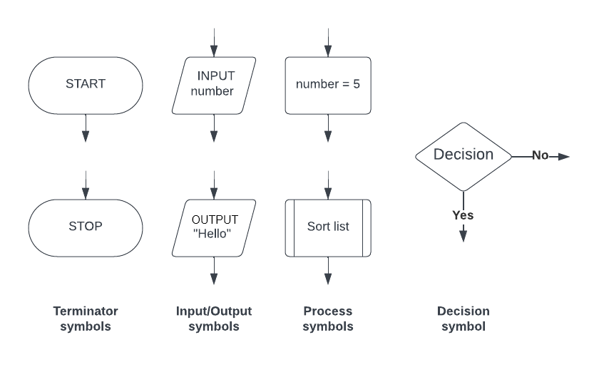
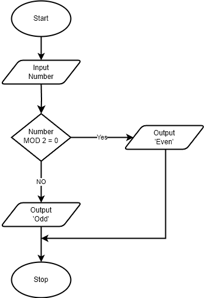

Algorithm Basics
Definition of algorithm
What is an algorithm?
- An algorithm is a solution to a problem expressed as a sequence of defined steps
- Methods of writing an algorithm before attempting to program a solution include:
- Structured English
- Pseudocode
- Flowcharts
Structured English
- Structured English is a human-readable method for describing algorithms using a combination of natural English language and programming logic
- It uses clear English phrases to describe each step
- Logic structures like IF…THEN, REPEAT, and WHILE may appear, but without strict syntax rules
- Often used in the early planning stages before converting to pseudocode
Ask the user to enter their age
If the age is 18 or over
→ Display a welcome message
Otherwise
→ Display an access denied message
Pseudocode
- Pseudocode is a precise, structured, and language-independent way of describing an algorithm that resembles a programming language
- It follows specific exam-board-defined syntax
- It includes formal elements like
IF,THEN,ELSE,WHILE,REPEAT,DECLARE, and←for assignment - Students must follow CIE’s pseudocode format in exams
- It includes formal elements like
INPUT Age
IF Age >= 18 THEN
OUTPUT "Welcome to the site"
ELSE
OUTPUT "Sorry, this site is for users 18 and over"
ENDIF
Flowcharts
- Flowcharts are a visual tool that uses shapes to represent different functions to describe an algorithm
- Used to visualise the flow of control in a system
- Standard symbols include:
- Oval for Start/End
- Parallelogram for Input/Output
- Rectangle for Processes
- Diamond for Decisions
- Arrows show the sequence of operations

Identifier tables
What is an identifier table?
- An identifier table is used when writing pseudocode to keep track of all the identifier names used in an algorithm
- An identifier is the name given to a variable, constant, array, procedure, or any other named element in the pseudocode
Why use an identifier table?
- It helps you stay organised when designing an algorithm
- Ensures consistent naming
- Makes it easier to understand what each identifier stores or does
- Useful in exam questions when you are asked to declare variables clearly
Identifier naming rules
- Must start with a letter (A–Z or a–z)
- Can include letters, digits (0–9), and underscores (_)
- Accented characters and symbols are not allowed
- Identifiers are case sensitive (e.g.
Totalandtotalare NOT treated the same)
| Identifier | Description |
|---|---|
StudentName |
Stores a student’s full name |
TestScore |
Holds a test score value |
MAX_SCORE |
Maximum score allowed |
FormList |
Stores names in a form group |
Pseudocode
Input, process, output
What is an input?
- An input is data or information being entered/taken into a program before it is processed in the algorithm
- An input can come from a variety of sources, such as:
- User - keyboard, mouse, controller, microphone
- Sensors - temperature, pressure, movement
- Values are input using the
INPUTcommand
INPUT <identifier>
What is a process?
- A process is a doing action performed in the algorithm that transforms inputs into the desired output. The central processing unit (CPU) executes the instructions that define the process
- An example would be:
- Comparing two numbers
- Calculating an average
What is an output?
- An output is the result of the processing in an algorithm and usually the way a user can see if an algorithm works as intended
- An output can take various forms, such as:
- Numbers - result of calculations
- Text
- Images
- Actions - triggering events
- Values are output using the
OUTPUTcommand
OUTPUT <value(s)>
More than one value can be output in the same command when separated by commas
OUTPUT "First name: ", Fname, "Surname: ", Sname
Example 1 - Area of a shape
- A user wants to write a program to calculate the area of a shape
| Input | Process | Output |
|---|---|---|
| • Length • Width |
• Length ✕ width | • Area |
// Calculate the area of a rectangle
INPUT Length
INPUT Width
Area ← Length * Width
OUTPUT "The area is ", Area
Example 2 - Average test score
- A teacher wants to calculate the average mark achieved on a test amongst students in a class
- The teacher needs to enter how many students in the class and for each students a score out of 50
| Input | Process | Output |
|---|---|---|
| • Number of students • Score per student |
• TotalScore = TotalScore + score per student • Average = TotalScore / Number of students |
• Average mark |
// Calculate the average test score for a class
DECLARE TotalScore : INTEGER
DECLARE Score : INTEGER
DECLARE NumberOfStudents : INTEGER
DECLARE Average : REAL
TotalScore ← 0
INPUT NumberOfStudents
FOR StudentIndex ← 1 TO NumberOfStudents
OUTPUT "Enter score for student ", StudentIndex
INPUT Score
TotalScore ← TotalScore + Score
NEXT StudentIndex
Average ← TotalScore / NumberOfStudents
OUTPUT "The average score is ", Average
Programming constructs
What is sequence?
- Sequence refers to lines of code which are run one line at a time
- The lines of code are run in the order that they written from the first line of code to the last line of code
- Sequence is crucial to the flow of a program, any instructions out of sequence can lead to unexpected behaviour or errors
Example
- A simple program to ask a user to input two numbers, number two is subtracted from number one and the result is outputted
| Line | Pseudocode |
|---|---|
| 01 | INPUT NumberOne |
| 02 | INPUT NumberTwo |
| 03 | Result ← NumberOne - NumberTwo |
| 04 | OUTPUT "The result is ", Result |
What is selection?
- Selection is when the flow of a program is changed, depending on a set of conditions
- The outcome of this condition will then determine which lines or block of code is run next
- Selection is used for validation, calculation and making sense of a user’s choices
- There are two ways to write selection statements:
- if… then… else…
- case…
| Structure | IF…THEN…ELSE example | CASE statement example |
|---|---|---|
| Purpose | Used for binary decisions (true/false) | Used for multiple specific options |
| Scenario | Check if a user is old enough to vote | Perform an action based on the direction entered |
| Pseudocode example | INPUT Age IF Age >= 18 THEN OUTPUT “You can vote” ELSE OUTPUT “You cannot vote” ENDIF |
INPUT Direction CASE OF Direction “N” : OUTPUT “North” “S” : OUTPUT “South” “E” : OUTPUT “East” “W” : OUTPUT “West” OTHERWISE : OUTPUT “Invalid direction” ENDCASE |
What is iteration?
- Iteration means repeating a line or block of code using a loop
- It allows a program to perform a task multiple times until a condition is met
Types of iteration
| Type | Description | Pseudocode Format |
|---|---|---|
| Count-controlled | Repeats a fixed number of times | FOR ... TO ... NEXT |
| Post-condition | Repeats at least once, checks the condition after running the block | REPEAT ... UNTIL |
| Pre-condition | Checks the condition before running the block | WHILE ... ENDWHILE |
// Count-controlled
FOR i ← 1 TO 5
OUTPUT i
NEXT i
// Post-condition
REPEAT
INPUT Password
UNTIL Password = "Secret123"
// Pre-condition
WHILE Score < 100
Score ← Score + 10
ENDWHILE
Quiz
A teacher uses a paper-based system to store marks for a class test. The teacher requires a program to assign grades based on these results. The program will output the grades together with the average mark. Write a detailed description of the algorithm that will be needed.[6] Answer Marks awarded for a description of each of the following steps of the algorithm:
- Reference variables for Count of students and Total marks [1 mark]
- Loop through all students (Count) [1 mark]
- Input individual mark (in loop) [1 mark]
- Compare mark with threshold / boundary values to determine grade (in loop) [1 mark]
- Output the grade for a student (in loop) [1 mark]
- Maintain a Total (and Count if required) (in loop) [1 mark]
- Calculate average by dividing Total by Count and Output (after loop) [1 mark]
Translation Skills
Structured English/Flowchart to Pseudocode
Example - Structured English
A customer is buying an item. If the customer has a discount code, they receive 10% off the price. Otherwise, they pay the full amount. The program should ask for the item price and whether they have a discount code, then calculate and display the final price.
Step 1 - Structured English
- Ask the user to enter the price of the item
- Ask the user if they have a discount code
-
If they do have a discount code
→ Calculate 10% off the price
→ Subtract the discount from the original price -
Otherwise
→ The price stays the same -
Output the final price
Step 2 – Identifier table
| Identifier | Description |
|---|---|
ItemPrice |
Original price of the item |
HasDiscount |
TRUE if user has a discount code |
DiscountAmount |
Amount taken off the original price |
FinalPrice |
Price after discount is applied |
Step 3 – Pseudocode
// Ask for item price
INPUT ItemPrice
// Ask if user has a discount code
INPUT HasDiscount
IF HasDiscount = TRUE THEN
DiscountAmount ← ItemPrice * 0.10
FinalPrice ← ItemPrice - DiscountAmount
ELSE
FinalPrice ← ItemPrice
ENDIF
// Output the final price
OUTPUT "The final price is ", FinalPrice
Structured English/Pseudocode to Flowchart
Example - Pseudocode
INPUT Number
IF Number MOD 2 = 0 THEN
OUTPUT "Even"
ELSE
OUTPUT "Odd"
ENDIF
Step 1 – Identifier table
| Identifier | Description |
|---|---|
Number |
The number entered by the user |
Step 2 – Flowchart structure
| Pseudocode statement | Flowchart symbol | Purpose |
|---|---|---|
INPUT Number |
Parallelogram (Input/Output) | User enters a number |
IF Number MOD 2 = 0 |
Diamond (Decision) | Checks if the number is divisible by 2 |
OUTPUT "Even" |
Parallelogram (Input/Output) | Displays message if the condition is true |
OUTPUT "Odd" |
Parallelogram (Input/Output) | Displays message if the condition is false |
| Start/End | Oval | Denotes beginning and end of the process |
| Arrows | Lines with arrows | Indicate flow of control |

Refinement & Logic
Stepwise refinement
What is stepwise refinement?
- Stepwise refinement is the process of breaking down a complex problem into smaller, more manageable sub-problems in a logical order
- Each sub-problem is refined step by step until it is simple enough to be solved with a single subroutine or module
- This method ensures that the overall problem can be solved by addressing each part individually, in a structured and efficient way
Relationship to decomposition and top-down design
- Decomposition is the general concept of breaking a problem down into smaller parts
- Top-down design is the strategy used to perform decomposition
- Stepwise refinement is the process used in top-down design to gradually refine each major task into simpler sub-tasks
- In other words, stepwise refinement is how top-down design is implemented
Benefits of stepwise refinement
- Helps developers understand and organise the structure of a program
- Makes testing and debugging easier through unit testing of individual subroutines
- Encourages code reuse by breaking tasks into reusable components
- Supports collaborative development, as tasks can be divided between team members
- Each subroutine should:
- Be clear and focused on a single task
- Be simple enough to implement directly
- Not need further breakdown
Example: Calculating student grades
- Here’s how stepwise refinement could be applied to a program designed to calculate student grades for a teacher’s classes:
Top-level task:
- Calculate grades for all students in all classes
Stepwise refinement:
- Step 1 – Calculate the grade for each assessment
- For each question:
- Mark the question
- Store the mark
- Sum the marks for all questions in the assessment
- For each question:
- Step 2 – Calculate the average grade for each student
- Add together grades from all assessments
- Divide by the number of assessments
- Store the average
- Step 3 – Repeat for each class
- For every student in the class:
- Perform Steps 1 and 2
- For every student in the class:
- This structured breakdown allows each task to be turned into a subroutine, simplifying the design, implementation, and testing of the overall program